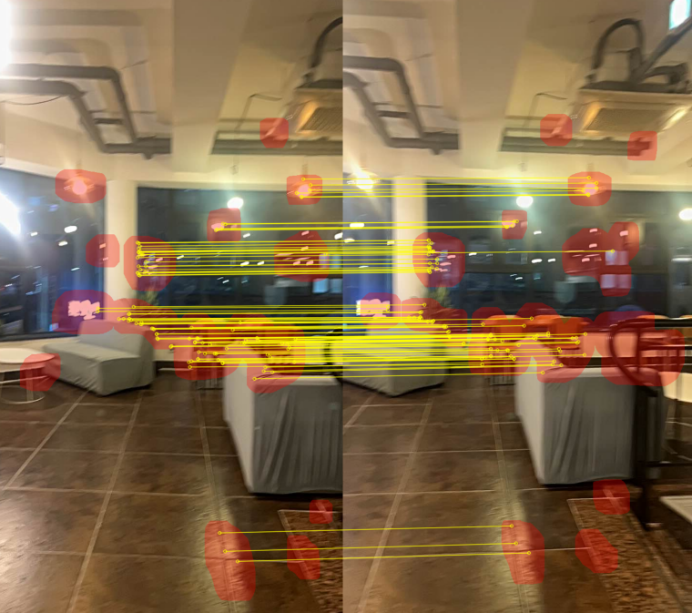

Define ROI
Select the spatial area expected to contain useful correspondences.
RESEARCH PROTOTYPE
An exploratory matching prototype that separates where to search from how to search: restrict descriptor candidates to a region of interest, then use a Hierarchical Navigable Small World index to retrieve approximate nearest neighbors efficiently.

Overview
Feature matching is usually described as a descriptor problem, but the candidate pool itself can be just as important. Searching an entire image exposes every query descriptor to repetitive texture, semantically irrelevant objects, and distant background structure.
First, define a region of interest that represents the relevant object or scene area. Second, index only the descriptors inside that region. Third, use HNSW to retrieve approximate nearest neighbors instead of exhaustively comparing every descriptor pair.
Hypothesis
Global descriptor search treats every extracted point as a possible match. This is useful when the scene is unknown, but wasteful when the application already knows which object or region matters.
The central hypothesis was inspired by the unconscious behavior of people when capturing panoramic images. During camera rotation, users tend to stabilize the frame around the horizon and keep the main subject near the horizontal center, even in the presence of hand jitter. This suggests that the central horizontal region is likely to maintain more stable overlap across adjacent frames.
To examine this assumption, the prototype collected IMU measurements from a smartphone camera alongside the captured image sequence. Gyroscope and accelerometer measurements were incorporated into the ROI-selection process to identify temporally stable regions during camera motion.
Based on these observations, the ROI was considered as a potentially adaptive region rather than only a fixed rectangular crop. Low-motion and texture-rich regions could be prioritized using visual features together with IMU-derived motion cues, while unstable foreground regions and areas affected by parallax distortion could be down-weighted or excluded from descriptor matching.
Prototype Pipeline
Select the spatial area expected to contain useful correspondences.
Represent local points inside the retained region.
Organize reference descriptors in a hierarchical proximity graph.
Query approximate nearest neighbors for target descriptors.
Reject ambiguous candidates and check geometric consistency.
Spatial Filtering
The region is not merely a crop for visualization. It changes the descriptor population and therefore the probability of retrieving a visually similar but irrelevant point.
Indexing
HNSW provides coarse-to-fine graph traversal: upper layers move quickly across the space, while lower layers refine the local neighborhood.
Matching
Approximate nearest neighbors still need descriptor ambiguity checks and geometric verification because fast vector similarity alone does not establish a valid correspondence.
Experimental Questions
Scope note: this was an exploratory comparison, not a publication-grade benchmark. The page therefore emphasizes the design questions and observed trade-offs rather than presenting unsupported headline metrics.
Practical Findings
Restricting the reference descriptor set can reduce matches caused by repeated texture or unrelated background regions.
Graph-based lookup is useful when the descriptor index becomes large enough that exhaustive comparison dominates the pipeline.
If the selected region excludes the true correspondence, no retrieval method can recover it from the missing candidate set.
Approximate vector similarity should be followed by consistency checks, especially in repetitive or low-texture scenes.
The experiment reframed ROI selection as part of the matching algorithm itself. A smaller candidate set can improve relevance and speed, but only when the spatial prior is reliable and the approximate-search recall is sufficient.
Limitations
The prototype depends on a meaningful region being available before matching. Manual or inaccurate regions can bias the result.
Learn or track the ROI jointly, or use uncertainty-aware expansion around the predicted region.
The work was not evaluated as a full research paper against established matching systems and datasets.
Measure recall, precision, latency, memory, geometric inlier rate, and sensitivity to ROI perturbation.
A graph index can miss the exact nearest neighbor depending on its construction and search parameters.
Use HNSW for candidate generation, then exact re-ranking and geometric verification on a small shortlist.
ROI and HNSW can improve candidate handling, but cannot make a weak descriptor invariant to viewpoint, lighting, or deformation.
Combine the retrieval design with stronger local features and explicit uncertainty estimates.
My Role
Framed matching as a combination of spatial candidate selection and efficient nearest-neighbor retrieval.
Structured the ROI filtering, descriptor indexing, query, filtering, and verification stages.
Examined how candidate reduction, approximate search, and ROI errors affect efficiency and match reliability.
Recorded the initial idea, experimental observations, limitations, and possible directions for a stronger study.
Reflection
A fuller study would jointly evaluate ROI uncertainty, descriptor recall, ANN parameters, and geometric inlier quality across standard local-feature and dense-matching datasets.